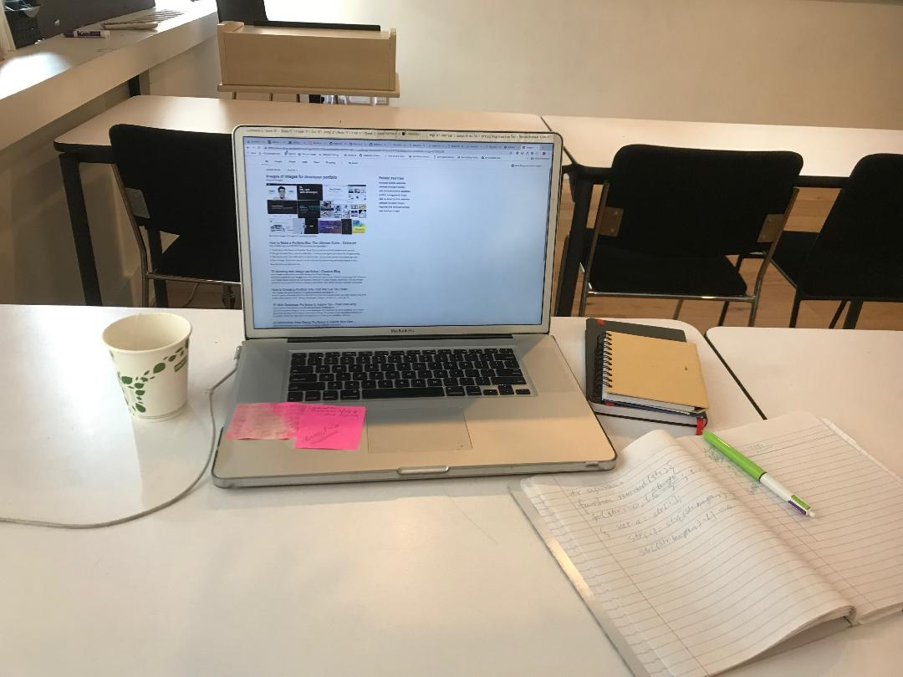
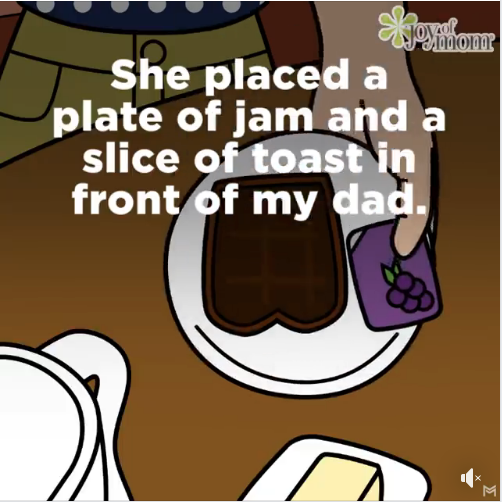
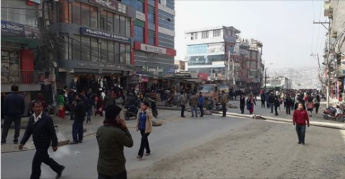
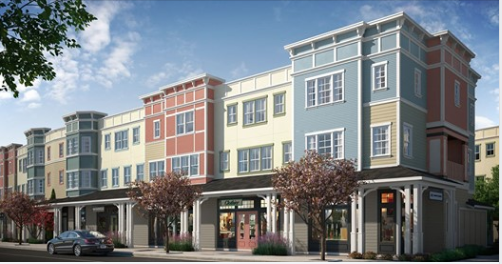
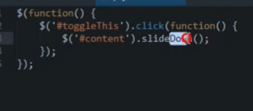

Hi! I am Bijaya, a software developer in San Francisco.
You can learn more about me and my skills if you click right here.
Please scroll down
Content starts here
Baker was shot in the abdomen while his roommate, who wasn’t immediately identified, returned fire, according to AL.com. Baker was found at the mobile home by responding officers and taken to the hospital. He was reportedly in critical condition as of Monday. Jermain Dickerson, 22, was released from a Foley hospital, while Tamarius Dickerson, 23, and Jones, 20, were in stable condition at a Mobile hospital. No arrests were made as of Monday, Mack said. Police were still investigating the role of the roommate and another unidentified woman in the incident, according to the Atlanta Journal-Constitution.Baker was shot in the abdomen while his roommate, who wasn’t immediately identified, returned fire, according to AL.com. Baker was found at the mobile home by responding officers and taken to the hospital. He was reportedly in critical condition as of Monday. Jermain Dickerson, 22, was released from a Foley hospital, while Tamarius Dickerson, 23, and Jones, 20, were in stable condition at a Mobile hospital. No arrests were made as of Monday, Mack said. Police were still investigating the role of the roommate and another unidentified woman in the incident, according to the Atlanta Journal-Constitution.Baker was shot in the abdomen while his roommate, who wasn’t immediately identified, returned fire, according to AL.com. Baker was found at the mobile home by responding officers and taken to the hospital. He was reportedly in critical condition as of Monday. Jermain Dickerson, 22, was released from a Foley hospital, while Tamarius Dickerson, 23, and Jones, 20, were in stable condition at a Mobile hospital. No arrests were made as of Monday, Mack said. Police were still investigating the role of the roommate and another unidentified woman in the incident, according to the Atlanta Journal-Constitution.Baker was shot in the abdomen while his roommate, who wasn’t immediately identified, returned fire, according to AL.com. Baker was found at the mobile home by responding officers and taken to the hospital. He was reportedly in critical condition as of Monday. Jermain Dickerson, 22, was released from a Foley hospital, while Tamarius Dickerson, 23, and Jones, 20, were in stable condition at a Mobile hospital. No arrests were made as of Monday, Mack said. Police were still investigating the role of the roommate and another unidentified woman in the incident, according to the Atlanta Journal-Constitution.Baker was shot in the abdomen while his roommate, who wasn’t immediately identified, returned fire, according to AL.com. Baker was found at the mobile home by responding officers and taken to the hospital. He was reportedly in critical condition as of Monday. Jermain Dickerson, 22, was released from a Foley hospital, while Tamarius Dickerson, 23, and Jones, 20, were in stable condition at a Mobile hospital. Mack said. Police were still investigating the role of the roommate and another unidentified woman in the incident, according to the Atlanta Journal-Constitution.nvestigating the role of the roommate and another unidentified woman in the incident, according to the Atlanta Journal-Constitution.
About
No arrests were made as of Monday, Mack said. Police were still investigating the role of the roommate and another unidentified woman in the incident, according to the Atlanta Journal-Constitution.Baker was shot in the abdomen while his roommate, who wasn’t immediately identified, returned fire, according to AL.com. Baker was found at the mobile home by responding officers and taken to the hospital. He was reportedly in critical condition as of Monday.
Travel
++++++ Dickerson, 22, was released from a Foley hospital, while Tamarius Dickerson, 23, and Jones, 20, were in stable condition at a Mobile hospital. No arrests were made as of Monday, Mack said. Police were still investigating the role of the roommate and another unidentified woman in the incident, according to the Atlanta Journal-Constitution.Baker was shot in the abdomen while his roommate, who wasn’t immediately identified, returned fire, according to AL.com. Baker was found at the mobile home by responding officers and taken to the hospital. He was reportedly in critical condition as of Monday. Jermain Dickerson, 22, was released from a Foley hospital, while Tamarius Dickerson, 23, and Jones, 20, were in stable condition at a Mobile hospital. No arrests were made as of Monday, Mack said. Police were still investigating the role of the roommate and another unidentified woman in the incident, according to the Atlanta Journal-Constitution.Baker was shot in the abdomen while his roommate, who wasn’t immediately identified, returned fire, according to AL.com. Baker was found at the mobile home by responding officers and taken to the hospital. He was reportedly in critical condition as of Monday. Jermain Dickerson, 22, was released from a Foley hospital, while Tamarius Dickerson, 23, and Jones, 20, were in stable condition at a Mobile hospital. No arrests were made as of Monday, Mack said. Police were still investigating the role of the roommate and another unidentified woman in the incident, according to the Atlanta Journal-Constitution.Baker was shot in the abdomen while his roommate, who wasn’t immediately identified, returned fire, according to AL.com. Baker was found at the mobile home by responding officers and taken to the hospital. He was reportedly in critical condition as of Monday. Jermain Dickerson, 22, was released from




Prev
Next